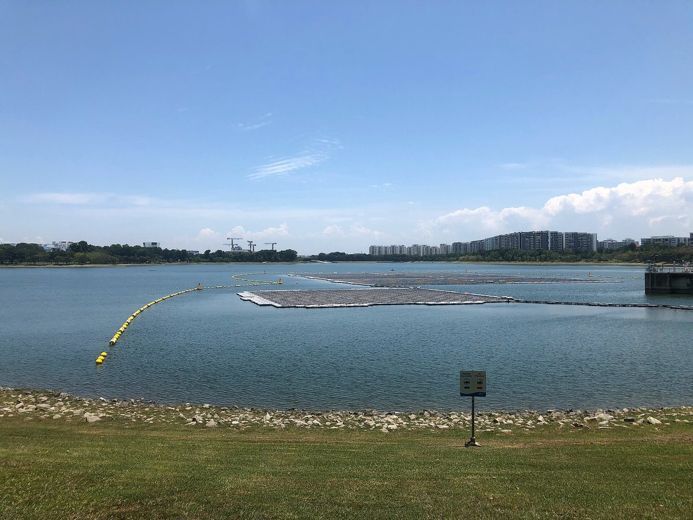

전북도·대통령비서실, 익산 여산면 햇빛소득마을 현장 점검…5개 마을 협동조합 옥금저수지 990kW 수상태양광 준비 상황 살피고 간담회

익산시청 간담회서 ESS 설치 지원·부지 확보·주민 자부담 완화 논의, 익산시는 국공유지 활용 규제 완화 등 4가지 건의…익산 7곳 조건부 선정, 3차 공모 30일 마감
전북특별자치도와 대통령비서실·행정안전부 관계자들이 27일 익산시 여산면 옥금저수지의 햇빛소득마을 현장을 둘러본 뒤 익산시청에서 간담회를 열었다. 고정삼 경제부지사와 최정호 익산시장, 대통령비서실 배진교 국민경청비서관·이영수 농림축산비서관·이유진 기후에너지환경비서관, 남호성 행정안전부 햇빛소득마을추진단장이 참석했고 한국전력공사·한국농어촌공사 관계자도 함께했으며, 참석자들은 상옥·하옥·사월·남산·석교 5개 마을 주민이 함께 세운 '제남 햇빛소득마을 협동조합'의 990kW 규모 수상태양광 사업 준비 상황을 살피고 부지 확보와 자금 조달 등 주민 건의를 들었다. 간담회에서는 에너지저장장치(ESS) 설치 지원, 사업부지 확보, 주민 자부담금 완화 등 정부 차원의 지원과 제도 보완이 논의됐고, 익산시는 국공유지 활용 규제 완화, ESS 지원을 통한 지방 재정 부담 완화, 전력계통 조기 연계, 전문인력 지원 등 네 가지를 정부에 건의했으나 정부 쪽 답변은 전해지지 않았다. 전북도와 익산시 등 지자체는 이와 함께 ESS 설치 규모·방법·공모 방식에 관한 가이드라인을 서둘러 마련하고, 설치비 최대 85% 융자가 실제로 이뤄지도록 금융권을 설득하며, 부지를 둘러싼 관계기관 사이의 이견을 조율해 달라고 비서실에 요청했는데, 도 관계자는 정부가 태양광 설치비의 최대 85%까지 금융지원을 하겠다는 입장을 밝혔더라도 금융권 설득은 따로 필요하다고 설명했다. 익산에서는 올해 1차 공모 4곳, 2차 공모 3곳 등 모두 7곳이 조건부 선정됐으며, 시는 성당포구마을에서 마을자치연금을 정착시킨 경험을 살려 사업을 추진하고 30일 마감하는 3차 공모에도 참여할 계획이다. 최정호 시장은 "중앙정부의 적극적인 정책 지원으로 농촌 마을들이 새로운 희망과 활력을 얻고 있다"고 말했다. 전북에서는 올해 1차 공모에 24개 마을이 신청해 17곳이, 2차 공모에 74개 마을이 신청해 59곳이 뽑혀 12개 시군 76개 마을이 선정됐고, 2030년까지 500곳을 목표로 하는 도는 시군·한전·농어촌공사와 꾸린 민관합동 현장지원단으로 부지 확보와 계통 연계를 돕고 있으며, 고정삼 부지사는 현장 의견이 제도 개선과 지원으로 이어지도록 중앙정부와 협력하겠다고 밝혔다.
시민에너지 관점
다섯 마을이 협동조합 하나로 뭉쳐 공공 저수지에 990kW를 올리려 해도, 첫 관문은 기술이 아니라 부지와 돈이다. 마을 사업은 초기 위험이 커서 주민이 감당하기 어렵다는 우려가 있지만, 스코틀랜드 정부는 공동체·재생에너지 지원 제도(CARES)로 인허가 전 단계의 초기 비용을 보조금과 대출로 메워 주민 단체가 첫 고비를 넘도록 도와 왔다. 초기 위험을 공공이 나눠 지면 발전 수익은 마을에 그대로 남고, 외지 사업자가 저수지 수면을 먼저 차지하는 일도 막을 수 있다. 정부는 이번 간담회에서 나온 ESS·국공유지·계통·자부담 문제에 3차 공모 결과가 나오기 전에 제도로 답하고, 저수지를 관리하는 공공기관은 마을 협동조합에 수면을 먼저 내주는 원칙을 세워야 한다.
출처: 국제뉴스 2026-10-27 조광엽 원문 보기
全北道・大統領秘書室、益山・礪山面の太陽光所得村を現場点検…5集落の協同組合による玉琴貯水池990kW水上太陽光の準備状況を確認し懇談会
益山市庁の懇談会でESS設置支援・用地確保・住民自己負担の軽減を議論、益山市は国公有地活用の規制緩和など4項目を要望…益山で7カ所が条件付き選定、第3次公募は30日締め切り
全北特別自治道と大統領秘書室・行政安全部の関係者は27日、益山市礪山面の玉琴（オックム）貯水池にある太陽光所得村（ヘッピッ所得村）の現場を視察した後、益山市庁で懇談会を開いた。コ・ジョンサム経済副知事、チェ・ジョンホ益山市長、大統領秘書室のペ・ジンギョ国民傾聴秘書官・イ・ヨンス農林畜産秘書官・イ・ユジン気候エネルギー環境秘書官、ナム・ホソン行政安全部太陽光所得村推進団長が出席し、韓国電力公社・韓国農漁村公社の関係者も同行した。参加者は、上玉・下玉・沙月・南山・石橋の5集落の住民が共同で設立した「済南太陽光所得村協同組合」の990kW規模の水上太陽光事業の準備状況を確認し、用地の確保や資金調達など住民の要望を聞いた。懇談会ではエネルギー貯蔵装置（ESS）の設置支援、事業用地の確保、住民の自己負担金の軽減など政府レベルの支援と制度の補完が話し合われ、益山市は国公有地活用の規制緩和、ESS支援による地方財政負担の軽減、電力系統への早期連系、専門人材の支援の4項目を政府に要望したが、政府側の回答は伝えられていない。全北道と益山市などの自治体はこれとあわせて、ESS設置の規模・方法・公募方式に関するガイドラインの早期策定、設置費の最大85%の融資が実際に行われるよう金融機関を説得すること、用地をめぐる関係機関の間の意見の食い違いを調整することを秘書室に要請し、道の関係者は、政府が太陽光設置費の最大85%まで金融支援を行う立場を示したとしても、金融機関の説得は別途必要だと説明した。益山では今年、第1次公募で4カ所、第2次公募で3カ所の計7カ所が条件付きで選ばれており、市は聖堂浦口村で「村自治年金」を定着させた経験を生かして事業を進め、30日に締め切る第3次公募にも参加する計画だ。チェ市長は「中央政府の積極的な政策支援で農村の集落が新たな希望と活力を得ている」と述べた。全北では今年、第1次公募に24集落が申請して17カ所、第2次公募に74集落が申請して59カ所が選ばれ、12市郡で計76集落が選定されており、2030年までに500カ所を目指す道は市郡・韓電・農漁村公社と組んだ官民合同の現場支援団で用地確保と系統連系を支援し、コ副知事は現場の声が実際の制度改善と支援につながるよう中央政府と協力すると述べた。
市民エネルギーの視点
5つの集落が1つの協同組合にまとまり、公共の貯水池に990kWを載せようとしても、最初の関門は技術ではなく用地と資金だ。集落の事業は初期リスクが大きく住民には担いきれないという懸念もあるが、スコットランド政府は地域・再生可能エネルギー支援制度（CARES）を通じて許認可前の初期費用を補助金と融資で埋め、住民団体が最初の山を越えられるよう支えてきた。初期リスクを公共が分担すれば発電収益はそのまま集落に残り、外部の事業者が貯水池の水面を先に押さえることも防げる。政府は今回の懇談会で出たESS・国公有地・系統・自己負担の問題に第3次公募の結果が出る前に制度で答え、貯水池を管理する公共機関は集落の協同組合に水面を優先して提供する原則を定めるべきだ。
出典: 国際ニュース 2026-10-27 チョ・グァンヨプ 原文を読む
全北道与总统秘书室赴益山砺山面"阳光收入村"现场考察…查看5个村庄合作社玉琴水库990kW水上太阳能筹备情况并召开座谈会
益山市厅座谈会讨论储能设施支持、用地保障、减轻居民自筹负担，益山市提出放宽国有公有土地使用限制等4项建议…益山7处有条件入选，第三批申报30日截止
全北特别自治道与总统秘书室、行政安全部有关人员27日察看了益山市砺山面玉琴水库的"阳光收入村"现场，随后在益山市厅召开座谈会。出席者包括经济副知事Ko Jeong-sam、益山市长Choi Jeong-ho，总统秘书室国民倾听秘书官Bae Jin-gyo、农林畜产秘书官Lee Young-soo、气候能源环境秘书官Lee Yu-jin，以及行政安全部阳光收入村推进团团长Nam Ho-seong，韩国电力公社和韩国农渔村公社有关人员也一同到场；与会者查看了上玉、下玉、沙月、南山、石桥5个村庄居民共同成立的"济南阳光收入村合作社"990kW规模水上太阳能项目的筹备情况，并听取了用地保障和资金筹措等居民诉求。座谈会讨论了储能设施（ESS）建设支持、项目用地保障、减轻居民自筹负担等政府层面的支持和制度完善方案；益山市向政府提出了放宽国有公有土地使用限制、通过ESS支持减轻地方财政负担、尽早接入电网、支持专业人才等4项建议，但政府方面的答复尚未披露。全北道和益山市等地方政府还向秘书室提出：尽快制定涉及ESS建设规模、方式和招募办法的指南，说服金融机构使最高85%的建设费贷款真正落地，并协调有关机构在用地问题上的分歧；据道政府有关人士介绍，即便政府已表示将为太阳能建设费提供最高85%的金融支持，仍需另行说服金融机构。今年益山第一批申报有4处、第二批有3处，共7处有条件入选；市政府表示将借鉴在圣堂浦口村落实"村自治年金"的经验推进项目，并参加30日截止的第三批申报。Choi Jeong-ho市长表示："在中央政府积极的政策支持下，农村村庄正获得新的希望和活力。"今年全北第一批有24个村庄申请、17个入选，第二批有74个申请、59个入选，12个市郡共76个村庄入选；以2030年建成500处为目标的道政府与各市郡、韩电、农渔村公社组成官民联合现场支援团，协助解决用地和并网问题，Ko Jeong-sam副知事表示将与中央政府合作，使现场意见切实转化为制度改进和支持。
市民能源视角
即使5个村庄联合成一个合作社、想在公共水库上建起990kW电站，第一道关口也不是技术，而是用地和资金。有人担心村庄项目前期风险大、居民难以承受，但苏格兰政府通过社区与可再生能源支持计划（CARES），以补助和贷款填补许可审批前的前期费用，帮助居民团体跨过第一道坎。只要公共部门分担前期风险，发电收益就能完整留在村里，也能防止外来开发商抢先占用水库水面。政府应在第三批申报结果出炉前，以制度回应此次座谈会提出的储能、国有公有土地、电网和自筹负担问题；管理水库的公共机构也应确立优先把水面提供给村庄合作社的原则。
来源: 国际新闻 2026-10-27 Jo Gwang-yeop 查看原文
Jeonbuk and presidential secretariat inspect sunlight income village in Iksan, checking five villages' cooperative plan for 990kW of floating solar on Okgeum Reservoir
Meeting at Iksan City Hall discusses battery storage support, sites and residents' own contributions; Iksan makes four requests including easier use of state and public land and has seven villages conditionally selected; third call closes Oct. 30
Officials from Jeonbuk State, the presidential secretariat and the Ministry of the Interior and Safety toured a sunlight income village site at Okgeum Reservoir in Yeosan-myeon, Iksan, on Oct. 27 and then held a meeting at Iksan City Hall. Those attending included Vice Governor for Economic Affairs Ko Jeong-sam, Iksan Mayor Choi Jeong-ho, three presidential secretaries — Bae Jin-gyo (public listening), Lee Young-soo (agriculture) and Lee Yu-jin (climate, energy and environment) — and Nam Ho-seong, head of the ministry's sunlight income village task force, along with officials from Korea Electric Power Corporation and Korea Rural Community Corporation, and they checked how the Jenam Sunlight Income Village Cooperative, set up jointly by residents of five villages — Sangok, Haok, Sawol, Namsan and Seokgyo — is preparing its 990kW floating solar project and heard residents' requests on securing a site and raising funds. The meeting discussed government support and rule changes such as help with energy storage systems (ESS), securing project sites and easing residents' own contributions, and Iksan City put four requests to the government — easing rules on using state and public land, ESS support to lighten the burden on local finances, early grid connection and support for specialist staff — though no government response has been reported. Jeonbuk State, Iksan City and other local governments also asked the secretariat to quickly issue guidelines on the scale, method and selection process for ESS installations, to persuade financial institutions so that loans covering up to 85% of installation costs actually materialise, and to settle disagreements among the agencies involved over sites; a provincial official explained that even though the government has said it will provide financing for up to 85% of solar installation costs, persuading lenders is a separate task. In Iksan, seven villages were conditionally selected this year, four in the first call and three in the second, and the city says it is building on its experience of establishing a "village self-governing pension" in Seongdangpogu village and plans to take part in the third call closing on Oct. 30. Mayor Choi said that "with the central government's active policy support, rural villages are gaining new hope and vitality." Across Jeonbuk, 17 of 24 applicant villages were selected in the first call and 59 of 74 in the second, for 76 villages in 12 cities and counties, and the province, which aims for 500 sunlight income villages by 2030, is helping with sites and grid connection through a public-private field support team with local governments, KEPCO and the Rural Community Corporation; Vice Governor Ko said the province would work with the central government so that views from the field lead to real rule changes and support.
Citizen Energy View
Even when five villages band together in one cooperative to put 990kW on a public reservoir, the first hurdle is not technology but land and money. Some worry that village projects carry too much early-stage risk for residents to bear, but the Scottish government has used its Community and Renewable Energy Scheme (CARES) to cover pre-consent costs with grants and loans, helping community groups get over that first hump. When the public sector shares the early risk, the generation income stays in the village and outside developers are kept from claiming the reservoir surface first. The government should answer the storage, public land, grid and self-contribution problems raised at this meeting with concrete rules before the third-call results are out, and the public bodies that manage reservoirs should adopt a principle of offering the water surface to village cooperatives first.
Source: Gukje News 2026-10-27 Jo Gwang-yeop Read the original